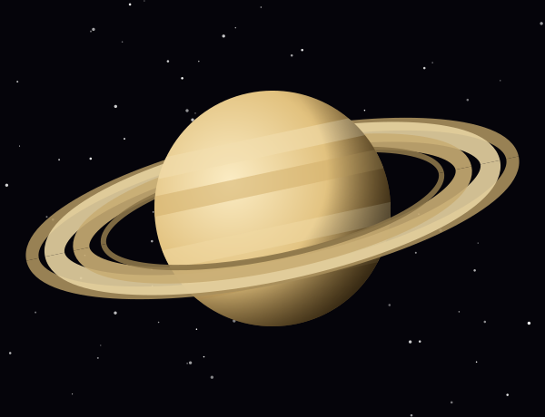
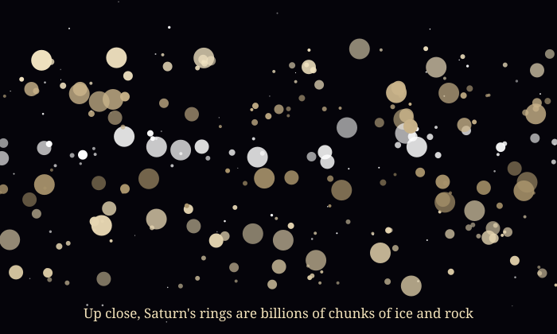

Lord of the Rings
Saturn is the second-largest planet and the farthest one you can easily see without a telescope. Like Jupiter, it is a gas giant made mostly of hydrogen and helium.
Its famous rings stretch hundreds of thousands of kilometers wide but are usually only about 10 meters to 1 kilometer thick.

Saturn Facts
- SizeAbout 116,460 km across, about 9 Earths wide.
- DistanceAbout 1.4 billion km (9.5 AU) from the Sun.
- DaySpins once every 10 hours and 33 minutes.
- YearOne orbit takes about 29.4 Earth years.
- MoonsMore than 270 known moons, the most of any planet. Titan is the largest.
- Could floatSaturn is less dense than water, so it would float in a big enough bathtub.
Watch the Rings Tilt
Saturn is tilted 26.7°, so as it orbits the Sun we see its rings from above, then edge-on, then from below. Edge-on, the rings almost disappear! Press Start to fast-forward through one 29.4-year Saturn orbit.
Year 0.0 of 29.4: rings tilted toward us

What Are the Rings Made Of?
The rings are made of billions of pieces of ice and rock, from grains as small as dust to chunks as big as a house.
Scientists think the rings may be quite young, possibly only a few hundred million years old, and they are slowly raining down onto Saturn.